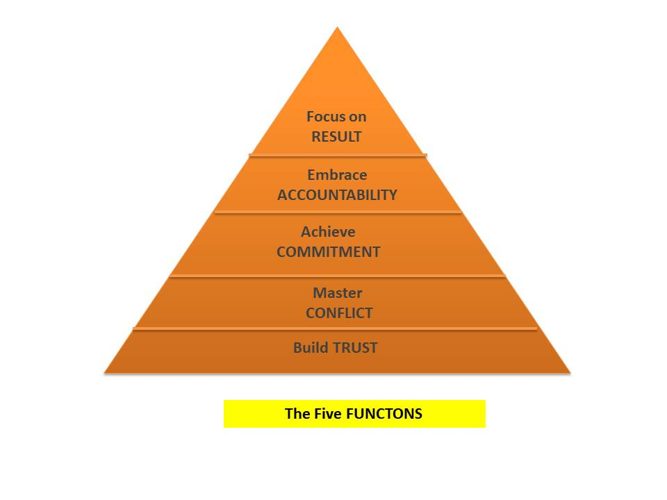

Group Dynamic
“Group-dynamics is concerned with the formation and structure of groups and the way they affect individual members, other groups and the organisation.”
| Table Of Content |
|---|
What is Group?
We define a group has two or more individuals, interacting and interdependent, who have come together to achieve particular common objectives. A group can range in size from two members to thousands of members.
R.M. Williams (1951) “A social group is a given aggregate of people playing inter-related roles and recognised by themselves or others as a unit of interaction.”
R.M. MacIver (1953) “By group we mean any collection of social beings who enter into distinctive social relationships with one another.”
Kretch, Crutchfield and Ballachy (1962) defined psychological group “ as two or more persons who meet the following conditions : (i) the relations among the members are independent, each member’s behaviour influences the behaviour of each of the others, (ii) the members ‘share on ideology’ – a set of beliefs, values and norms which regulate their mutual conduct.”
Paulus (1989) “ A group consists of two or more interacting persons who share common goals, have a stable relationship, are somehow interdependent and perceive that they are in fact part of a group.”
There are two types of Group :
- Formal Group : Formal workgroups are created by the organisation to achieve
organisational goals. These groups are defined based on certain parameters or the boundaries
in a formal way e.g. Sales Department, HR department, South region etc. Formal groups may
take the form of command groups, task groups, and functional groups.
- Control Group : Control Group means the group which is under the responsibility of a manager and the individuals account before the manager only.
- Task Group : Task Group means the group which is formed in order to perform the tasks that are determined by the organization.
- Function Group : Functional group is generally created by the organisation to accomplish specific goals within an unspecified time frame.
- Informal Group : An Informal group is neither formally structured nor
organisationally determined or defined. Informal groups are natural formations in the work
environment that appears in response to the need for social contact.
- Interest Group : Those working together to attain a specific objective with which each is concered.Members of interest groups may not be part of the same organisational department but they are bound together by some other common interest.
- Friendship Group : Those brought together because they share one or more common characteristics. Friendship groups are formed by members who enjoy similar social activities, political beliefs, religious values, or other common bonds.
Characteristics of Groups
- Social Interaction : It is true that members of the group are inter-related. There is a reciprocal communication among the group members. Social relations are the fundamentals of group life.
- Common Interest : ach and every member of the group has a common interest. There is similarity among the members in regard to their interest which promotes unity.
- Affected by group characteristics : Every group has some social characteristics which separate it from similar and dissimilar groups. These characteristics affect the members of the group.
- Sense of we-feeling : There is a feeling of belongingness among the members of the group. The members of the group help each other in performing their duties. They work collectively against the harmful powers.
Features of Group
- One or more individuals come together and influence each other.
- There are social interactions and relationships amongst the individual members of a group.
- There exists some common motives, drives, interests, emotions etc. amongst group members.
- There is communication among group members, both verbal and or non-verbal.
- They have common loyalty and participate in similar activities.
What is Group Dynamics?
It was founded by kurt Lewin to study group decision, group productivity, group interaction, group cohesiveness and group communication. the Underlying assumption was that the laws of the group behaviour can be established independently of the structure of the group.
Group Dynamic contain two terms : Group and Dynamic. Group is basically a collectivity of
two or more person. Dynamics comes from Greek work meaning FORCE.
Thus, "Group dynamic is concerned with the interactions of forces among group members in a
social situation."
Characteristics of Group Dynamics
The important characteristics of group dynamics are as follows:
- Perception : Group dynamics are defined by perception implies that every member of the group is aware of his respective relationship with others.
- Motivation : Members join groups because they expect that the group will solve their problems. they want progress and promotion which are achieved throigh group performance.
- Group Goals : Group goal are targets towards which input, process and output are directed.
- Group Organisation : Group is an Organisation which is composed of different organs to attain certain objectives. A group has the structural elements of an effective organisation.
- Interdependency : The main feature of a group is the members's interdepedence. The members of a group may have a common goal but they may not be a part of the group because they are not interdependent.
- Interaction : Members of a group must interact with each other. If they are interdependent but do not interact, the group's goals are not achieved. Members have an interpersonal problem-solving mode.
Importance of Group Dynamics
Group dyanmics is important due to following reasons :
- Formal and Informal workgroup are becoming increasingly important competative factors is an organisation due to changes in an organisation.
- Teamwork is the result of groups working together to effectively and efficiently achieving organistional task, vision and mission.
- Group Dynamics is a useful way to analyze groups as system that use inputs and engage in various processes or transformations and produce outcomes in an organisation.
- Group members should have task-relevant expertise and appropriate interpersonal skills for accomplishment of tasks.
- ]Group dynamic is a degree of diversity among group members that usually adds to performance in project.
Stages of Group Development
According to Tuckman’s theory, there are five stages of group development: forming, storming, norming, performing, and adjourning. During these stages group, members must address several issues and the way in which these issues are resolved determines whether the group will succeed in accomplishing its tasks.
- Forming : The first stage, Forming stage, faces a great amount of uncertainty about the group’s purpose, structure, and leadership amongst the members of the group. Members “test the waters” to determine what types of behaviours are acceptable. This stage is complete when members have begun to think of themselves as part of a group.
- Storming : The Storming stage is one of intra-group conflict. Members accept the existence of the group but resist the constraints it imposes on individuality. There is conflict over who will control the group. When this stage is complete, there will be a relatively clear hierarchy of leadership within the group.
- Norming : In the norming stage of group development, the team has effectively resolved most, if not all, conflicts and can productively work on the project or towards the end goal.
- Performing : The fourth stage is Performing. The structure at this point is fully functional and accepted. Group energy has moved from getting to know and understand each other to perform the task at hand.
- Adjourning : However, for temporary committees, teams, task forces, and similar groups that have a limited task to perform, the Adjourning stage is for wrapping up activities and preparing to disband.
Group Decision Making Process
Decision making is the process where by a final but best choice is made among the alternatives available.
Group decision making(also known as collaboratives decision making) is a situation faced when individuals collectively make a choice from the alternatives before them. The decision is no longer attributable to any single individual who is a member of the group.
There are two type of Decision making:
- consensus Mode : When all member of the decision arrived at, it is called 'consensus'.
- Majority Vote : If majority of the group members agree to the decision arrived at, it is called 'majority vote'.

- Diagnose Problem : To identify the problem to be solved.
- Developing Alternatives : Through different source like experience, practices in other groups, and ideas and suggestions from different parties involved.
- Evaluating the Alternatives : To know their plus and minus points, & then the most appropriate alternative is selected.
- Implementation & Monitoring the Decision : Implementation of selected alternative, checking with reference to the expectations, and making required corrections, if any.
Advantages
- Equal participation
- Take a right decision
- Goal Oriented
- Perform specific task
- Good Coordination
- Risk Taking
Disadvantages
- Time consuming and costly
- Individual domination
- Group think
- Goal displacement
- Problem of responsibility
Techniques of Group Decision Making
- Brainstorming :
- Originally adopted by Alex Osborn in 1938 in an American Company.
- According to him, Brainstorming means using the brain to storm the problem.
- Four basic Guidelines:
- Generate as many ideas as possible.
- Be creative, freewheeling, & imaginative.
- Build upon piggybank, extend or combine earlier ideas.
- withhold criticism of other's ideas.
- Nominal Group Techniques(NGT) :
- A Nominal group exists in name only, & the members have minimal interaction prior to making decisions.
- Process:
- Members brought together & presented the problem.
- Each members develops solution/ideas independently & writes them on cards.
- All present their ideas in a round-robin procedure.
- Brief time is alloted to clarify ideas, after the presentation by all.
- Group members individually rank their preferences for the best alternatives by secret ballot.
- Group decision is announced based on this ranking.
- Delphi Technique :
- "Delphi" is a place, where the ancient Greeks used to pray for information about the future.
- In this technique, members selected are experts & scattered over large distances, having no face-to-face interaction for decision making.
- The Effectiveness of the technique depends on the adequate time, participates expertise, communication skills, & motivation of the members.
- Consensus Mapping :
- Here, an attempt is made to arrive at a decision by pooling the ideas together generated by several task sub-groups.
- process:
- It begins with developing ideas by a task sub-group.
- The facilitators encourage participants to further develop clusters of ideas.
- The ideas so generated are developed & narrowed in smaller number of ideas.
- They are consolidated into a representative structure called 'strawman map', which is further narrowed down to arrive at a mutually acceptable solution.
Introduction of Group Cohesiveness
Group Cohesiveness is combination of two works 'Group', Two or more people who interact regularly to accomplish a common purpose or goal.'Cohesiveness', The extent to which members are loyal committed to the group; The degree of mutual attractiveness within the group.
What is Group Cohesiveness?
- Group cohesiveness is the ability to think and act 'as one' if the group is physically together or not.
- A Group is said to be in a state of cohesion when its members possess binsa linking them to one another and to the group as a whole.
- According to Stephen Robbins, "Group Cohesiveness is the degree to which members are attracted to each other and are motivated to stay in the group."
Factors that Increase Group Cohesiveness
- Inter-group Competition
- Personal attraction
- Favoural evaluation
- Agreement on Goals
- Interaction
Factors that decrease Cohesiveness
- Large group size
- Disagreement on goals
- Intra-group competition
- Domination
- Unpleasant experiences
Dysfunctions
- Absence of TRUST : The fear to be vulnerable with team members prevents the building of trust within the team.
- Fear of CONFLICT : Are people holding back? Are they picking their battles? The most important place for conflict is in meetings!
- Lack of COMMITMENT : The lack of clarity and/or fear of being wrong prevents team members from making decisions in a timely and definitive way.
- Avoidance of ACCOUNTABILITY : The need to avoid interpersonal discomfort prevents team members from holding one another accountable for their behaviour.
- Inattention to RESULT : By Nature, people tend to drift and will pay attention to other things if they are not held accountable.
How to Improve Dsyfunction?
- Build TRUST : Identify and discuss individual strengths and weaknesses
- Master CONFLICT : Acknowledge that conflict is required for productive meetings.
- Achieve COMMITMENT : Ensuring that team goals, objectives, and expectations are clearly communicated and understood by all team members.
- Embrace ACCOUNTABILITY : Clearly define the responsibilities of each team member and estabish measurable goals and expectations
- Focus on RESULT : Establish clear and measurable goals that align with the team's purpose and regularly track progess.